Anmerkungen zur Transkription
Im Original gesperrter Text ist so ausgezeichnet.
Weitere Anmerkungen zur Transkription befinden sich am Ende des Buches.
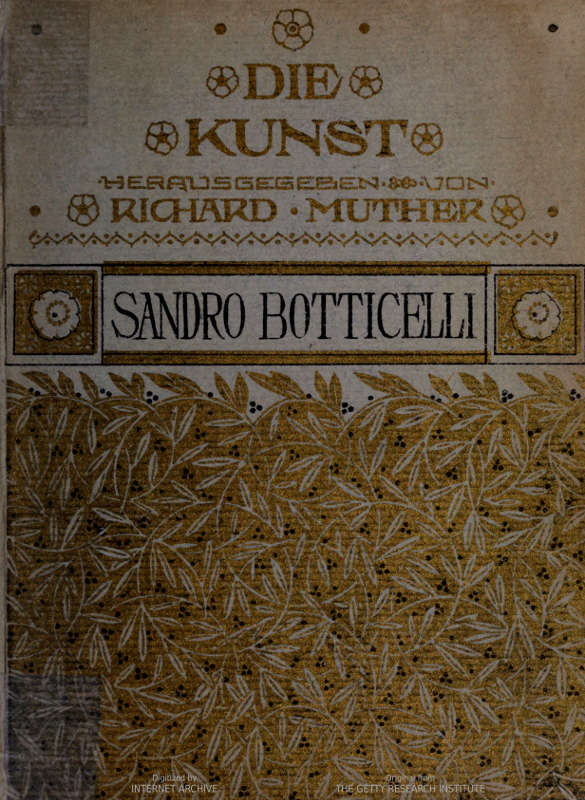
DIE KUNST · SAMMLUNG ILLUSTRIERTER MONOGRAPHIEN · HERAUSGEGEBEN VON · RICHARD MUTHER ·
· SECHSZEHNTER BAND ·
DIE KUNST
SAMMLUNG ILLUSTRIERTER MONOGRAPHIEN
Herausgegeben von
RICHARD MUTHER
Bisher erschienen:
Band I: LUCAS CRANACH von RICHARD MUTHER.
Band II: DIE LUTHERSTADT WITTENBERG von CORNELIUS GURLITT.
Band III: BURNE-JONES von MALCOLM BELL.
Band IV: MAX KLINGER von FRANZ SERVAES.
Band V: AUBREY BEARDSLEY von RUDOLF KLEIN.
Band VI: VENEDIG ALS KUNSTSTÄTTE von ALBERT ZACHER.
Band VII: EDOUARD MANET UND SEIN KREIS von JUL. MEIER-GRAEFE.
Band VIII: DIE RENAISSANCE DER ANTIKE von RICHARD MUTHER.
Band IX: LEONARDO DA VINCI von RICHARD MUTHER.
Band X: AUGUSTE RODIN von RAINER MARIA RILKE.
Band XI: DER MODERNE IMPRESSIONISMUS von JUL. MEIER-GRAEFE.
Band XII: WILLIAM HOGARTH von JARNO JESSEN.
Band XIII: DER JAPANISCHE FARBENHOLZSCHNITT, Seine Geschichte – sein Einfluss von FRIEDR. PERZYNSKI.
Band XIV: PRAXITELES von HERMANN UBELL.
Band XV: DIE MALER VON MONTMARTRE [Willette, Steinlen, T. Lautrec, Léandre] von ERICH KLOSSOWSKI.
Band XVI: BOTTICELLI von EMIL SCHAEFFER.
Weitere Bände in Vorbereitung.
| Jeder Band, in künstlerischer Ausstattung mit Kunstbeilagen, kartoniert | à Mk. 1.25. |
| ganz in Leder gebunden | à Mk. 2.50. |
JULIUS BARD VERLAG. BERLIN W. 57.
· · BUCHSCHMUCK VON GEORG TIPPEL · ·
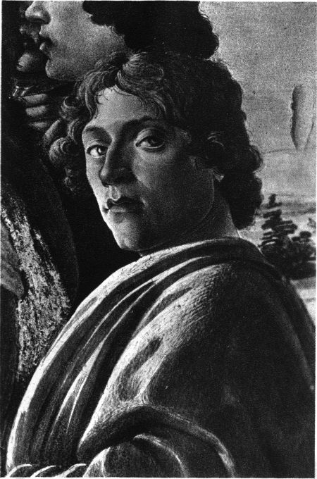
Florenz, Uffizien.
SELBSTBILDNIS
Detail aus der »Anbetung der Könige«.
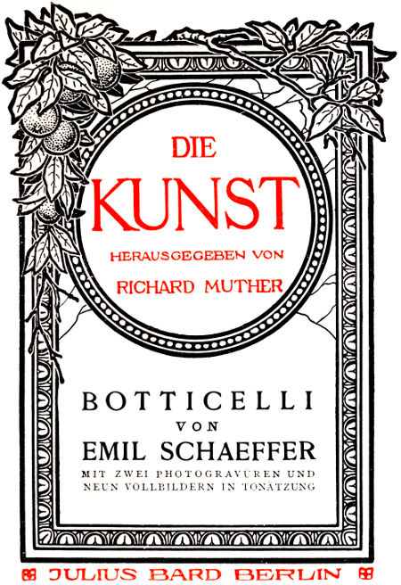
DIE
KUNST
HERAUSGEGEBEN VON
RICHARD MUTHER
VON
EMIL SCHAEFFER
MIT ZWEI PHOTOGRAVÜREN UND
NEUN VOLLBILDERN IN TONÄTZUNG
JULIUS BARD BERLIN
DIE ERSTEN FÜNFZIG EXEMPLARE DIESES BANDES WURDEN AUF MIT DER HAND GESCHÖPFTEM BÜTTENPAPIER – DIE ILLUSTRATIONEN AUF KAISERLICH JAPAN-BÜTTEN – ABGEZOGEN. DIE IN EINEN APARTEN, KOSTBAREN GANZLEDER-EINBAND GEBUNDENEN EXEMPLARE DIESER LIEBHABER-AUSGABE SIND VON 1 BIS 50 EINZELN MIT DER HAND NUMERIERT. DER PREIS EINES SOLCHEN EXEMPLARS BETRÄGT ZEHN MARK.
AUCH DIESE LIEBHABER-AUSGABE DER »KUNST« KANN DURCH JEDE BUCHHANDLUNG BEZOGEN WERDEN
ALLE RECHTE VOM VERLEGER VORBEHALTEN
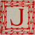
Jahrhunderte lang wurde in einer Kapelle der Kirche St. Maria Maggiore zu Florenz eine Darstellung der Himmelfahrt Mariä verwahrt, deren Entwurf man Sandro Botticelli dankt. In diesem anscheinend frommen Bilde hatte die heilige Inquisition ketzerische Greuel entdeckt und entzog es durch einen Vorhang den Blicken der Gläubigen. Botticelli war nämlich in der Auffassung der Engel einer verdammungswürdigen Meinung des Origines gefolgt, der da behauptet hatte, die Seelen jener Engel, die bei Lucifers Empörung neutral geblieben, seien in menschliche Körper gebannt und solcher Weise von Gott noch einmal versucht worden. Eigentlich hätte eine gestrenge Inquisition sämtliche Bilder von Botticellis Hand verdecken, [2] verhüllen und verbrennen sollen; denn stets kann vor ihnen der nämliche Tadel laut werden, allüberall gewahren wir Menschen mit engelhaften Seelen …
So liest man in den schmerzlichen Blicken botticellesker Menschen, das künden ihre adligen Gesten, mehr noch ihre Körper, die nichts vom Geiste der Schwere haben und wie Musik dünken. Die christlichen Heiligen und die heidnischen Grazien schreiten fremd durch dieses Thal der Thränen und bangen in frierender Sehnsucht nach einer verlorenen Sonnenheimat.
Man muss sehr weit zurückdenken, um die Erscheinung Botticellis innerhalb der Florentiner Kultur als eine historische Notwendigkeit zu empfinden. Das ganze Mittelalter hindurch tobten bis zum Beginn des Quattrocento wüste Parteikämpfe in den Gassen der Arnostadt. Die Häuser, gewaltig und zinnenbewehrt, wandelten sich oft genug in Festungen und ihre Inwohner liessen dem Schwert keine Zeit, Rost anzusetzen. Noch heute reckt, ein Wahrzeichen jener Tage, der Turm des Palazzo Vecchio sein Haupt über die[3] Dächer, als wollte er Ausschau halten nach einem Feinde; selbst die Chroniken des Trecento scheinen nicht mit der Feder, sondern mit dem Schwert geschrieben und ihre Sätze klingen zuweilen wie drohendes Panzergerassel. »Freiheit«, lautete das grosse Losungswort der Zeit; es enthielt alles, was die Florentiner auf Erden forderten; die Schönheit blieb dem Jenseits vorbehalten. Nur wenige jedoch waren so gelehrt, dass Bücher ihnen eine greifbare Vorstellung von himmlischer Seligkeit vermitteln konnten; darum sollte die Kunst durch goldschwere Gemälde den »uomini grossi, che non sanno lettera« das wahre Leben im farbigen Abglanz zeigen. Natürlich mussten dabei Anlehen bei den Gebilden dieser Erde gemacht werden, aber von einem Nachahmen der Sinnenwelt um ihrer selbst willen war nie die Rede.
Allmählich verstummte der Lärm des Streitens und der Friede zog in Florenz ein. Das Auge des Bürgers war von keiner zornigen Leidenschaft mehr verdunkelt, heiter und willig haftete es an den Herrlichkeiten dieser Erde. Das neue Empfinden forderte eine neue Kunst; das schöne Diesseits wollte man nunmehr im[4] Bilde schauen, den Menschen und die Dinge um ihn. Künstler standen auf, die, geführt von Donatello und Masaccio, die Herrschaft über alle Ausdrucksmittel der Kunst sich zu eigen machten, dem Bereich des Darstellbaren neue Stoffgebiete angliederten. Jenen Grossen, deren Gebilde noch den ganzen finsteren Reckentrotz des Trecento atmeten, folgten Jüngere, die bereits ernten durften, wo ihre Vorgänger gesäet. Das Irdische war der Kunst gewonnen und sie erzählten in frohen Gemälden von den Reizen dieses Neulandes: Fra Filippo Lippis Fresko vom Gastmahl des Herodes im Dome zu Prato vereint alles, was Lust am Dasein bedeutet. Musik ertönt in lichterfüllten Hallen, Jünglinge gewahren wir in festlicher Kleidung und ahnen durchs flatternde Gewand die Linien schlanker Mädchenkörper. »Weise Männer« erklärten dies Zeitalter, dem Cosimo de' Medici den Namen gab, »für das beste, das Florenz je zu teil geworden,« aber seiner zweiten Generation gehörten bereits unweise Menschen an, die keine Lust mehr am Dasein, die Wirklichkeit schaal und hässlich fanden, nach einer mehr vergeistigten Existenz verlangten, seltene und feinere Sensationen forderten.[5] Der erste Künstler nun, der anfangs nur leise und scheu, später immer leidenschaftlicher sein Nein zur Sinnenwelt sagte und ein Bild zum formgewordenen schmerzlichen Schönheitstraum gestaltete, war Sandro Botticelli. Von seinem Vater hatte er die aristokratische Natur nicht geerbt; denn der alte Mariano Filipepi betrieb das ehrsame Handwerk eines Lohgerbers und ärgerte sich wohl genugsam über seinen jungen Sandro. Dem gefiel das Lernen schlecht; in der Werkstatt eines Goldschmiedes hielt er auch nicht lange aus; da brachte der Alte den Knaben, der inzwischen – man weiss nicht, warum – den Beinamen Botticelli empfangen hatte, zu Fra Filippo, dem lustigen Maler-Mönch. Aber die genussfrohe Art des Meisters blieb Sandro zeitlebens fremd; er bewunderte die Kompositionen des Frate, mit seinen robust-gesunden Typen konnte er sich jedoch nicht befreunden. Nach Anmut und graziler Eleganz ging Botticellis Streben und gerade diese Eigenschaften liessen Fra Filippos Menschen vermissen; darum wählte sich Botticelli schon früh Antonio Pollaiuolo und Andrea del Verrocchio zu Vorbildern. In Antonio Pollaiuolos Werken gefielen[6] ihm die plastischen scharfen Formen, die bestimmte sichere Art der Linienführung und die Freude am feingliedrigen Jünglingskörper. Bei Verrocchio schätzte er den Sinn für alles Zierliche und Gleissende, der trotzdem niemals in Spielerei und Kleinkrämerei ausartete. Auch den rundlichen Gesichtstypus, dem man in Botticellis Frühwerken begegnet, die vorspringenden starkgewölbten Stirnen seiner ersten Madonnen, ihre hochgezogenen Brauen und schweren Lider, all solche Einzelheiten setzt man heute gern auf Rechnung verrocchiesker Einflüsse. Aber mögen einem auch bisweilen vor Sandros ersten Bildern die Namen Filippo Lippi, Antonio Pollaiuolo und Andrea del Verrocchio einfallen, so enthalten jene Werke noch immer genug von Botticellis Eigenart und gerade dies bedingt ihren Zauber.
Da ist seine Allegorie der Tapferkeit, jene »Fortezza« der Uffizien, die voreinst mit fünf anderen »Tugenden« Antonio und Piero Pollaiuolos eine Wand im florentiner Handelsgericht schmückte. Die Schöpfungen der beiden Brüder kann man heute ebenfalls in den Uffizien betrachten. Unweiblich ernst und streng, den hieratischen Madonnen der Primitiven vergleichbar,[7] thronen die »Tugenden« der Pollaiuoli in Marmornischen, deren fein ciselierte Ornamentik die geübte Hand des Goldschmieds verrät. Die »Hoffnung« blickt hergebrachter Weise zum Himmel empor, die andern schauen hoheitsvoll und kalt geradeaus ins Weite. Auch der »Fortezza« Sandros bietet eine bunt leuchtende Marmornische den Hintergrund. Aber sie »thront« nicht, sondern sitzt, das Haupt träumend zur Seite geneigt, lässig darin. In den Händen ruht ein Schwert; aber diese Frau, die nichts von einer Virago hat, könnte es niemals dräuend erheben. An die Komposition der Pollaiuoli hielt sich Botticelli, an ihre Typen, selbst an ihre Handform, und malte ein sinnendes Mädchen. Sein Wesen war lyrischer Art. Ein Weib bedeutete ihm mehr, als eine stahlgepanzerte Abstraktion. Und doch liebte er das Schimmern der Waffen; aber nicht, wie Castagno und Uccello, als starke Form einer Lebensbejahung, sondern lediglich vom rein malerischen Standpunkt. Er zuerst empfand das Künstlerbehagen am dunklen Blitzen eines blankpolierten Stahles, und das Leuchten des Metalls verbindet sich hier, beim Ärmel der Fortezza, mit Weiss und Blau[8] zu einer delikaten Harmonie, die man in sämtlichen Bildern der Pollaiuoli vergeblich suchen würde. Alle Welt feiert Sandro als Beherrscher der Linie; aber selten wird darauf hingewiesen, dass Botticelli auch das grösste Farbengenie, das bedeutendste Maltalent des Florentiner Quattrocento gewesen ist. In seinen Gemälden kann man jeden beliebigen Teil, jeden Winkel, jede Ecke auf malerische Qualitäten hin ansehen und wird stets reicheren Genuss dabei finden, als vor den meisten Bildern seiner Zeitgenossen.
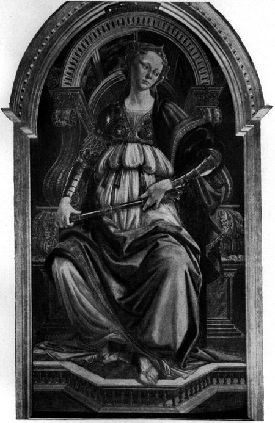
Florenz, Uffizien.
FORTEZZA
Was Botticelli in jungen Tagen bereits als Maler vermochte, zeigen noch deutlicher zwei kleine Werke, die aus Bianca Capellos »Studio« in die Uffizien gelangten. Sie schildern zwei Episoden der Judith-Legende: die Heimkehr der jüdischen Heldin aus dem Lager der Assyrier und die Auffindung des toten Holophernes. Vernehmlicher, als in der »Fortezza« äussert sich hier, besonders im ersten Gemälde, das specifisch Botticelleske. Mit dem Grau der Morgendämmerung verbinden sich das Orange und Violett der Gewänder zu einer Farbenstimmung, die kein anderer Florentiner ersinnen konnte; auch hätte keiner die Gestalt der Judith so eigenartig[9] aufgefasst. Sie galt im republikanischen Florenz als ein Symbol der bürgerlichen Freiheit; aber die »liberatix patriae suae«, die Donatellos Bronze verkörpert, ihr düsteres Pathos, ihre Zorngebärde liessen den jungen Botticelli kalt. Wiederum malte er ein träumendes Weib, das wie eine sanftere Schwester der »Fortezza« anmutet. Auch sie hat das blonde Haupt gesenkt und vor den versonnenen Mädchenaugen geistern noch die Schreckensbilder der verflossenen Nacht. Hinter ihr zerreisst Kampfeslärm die Morgenstille. Sie hört und gewahrt es nicht. Weder Furcht, noch Freude beflügeln ihren Schritt. Langsam und zögernd nur wandert sie, mit der Rechten das Schwert, in der Linken den Ölzweig des Friedens haltend, gen Bethulien. Botticelli wusste um den Reiz des Kontrastes. Darum gab er diesem Adelsgeschöpf eine stumpfsinnige Sklavin zur Gefährtin, die auf ihrem Kopfe gleichmütig wie einen Krug Wassers, das Haupt des Holophernes trägt, und ihre unvornehme Art zu laufen hebt sich scharf von Judiths königlichem Schreiten ab. Auch die »Auffindung des Holophernes« birgt manche Züge, die, Wegweisern vergleichbar, auf die Pfade von Botticellis späterer[10] Entwickelung deuten. So lässt seine Angst vor »toten Stellen« sich klar erkennen: jeder einzelne der assyrischen Krieger, die den hauptlosen Leichnam umdrängen, scheint bis ins Mark erschüttert von dem grausigen Anblick; jeder äussert durch Gebärden seine Ergriffenheit und jede Geste offenbart das besondere Wesen des Menschen, der sie vollführt. Diese Tugend wird bei Sandro bisweilen zum Fehler. Über dem Bestreben, das Innenleben jedes Einzelnen möglichst eindringlich zu schildern, verlor er den Blick für die Gesamtwirkung all dieser Mienen und Gebärden. Die Geste des Einen beschränkt die Armfreiheit seines Nächsten; die Köpfe drücken einander, der Raum deucht überfüllt und die Composition verworren.
Wie eng sich Botticelli damals an den grössten Meister des Nackten in Florenz, an Pollaiuolo, anschloss, zeigen der Leichnam des Holophernes und deutlicher noch seine Einzelfigur des heiligen Sebastian vom Jahre 1473 im Berliner Museum. Einstmals trug dieses Bild sogar Antonio Pollaiuolos Namen. Seltsam genug; denn es ist voll vom Geiste Botticellis. Man denke nur an den Sebastian[11] Pollaiuolos der National-Gallery. Antonio, der Maler-Bildhauer, sah in dem Heiligen nur einen Akt, in den Henkern eine Kombination mehrerer Bewegungsmotive. Für Sandro dagegen handelte es sich in erster Linie um Stimmung: die Schergen haben die Richtstätte bereits verlassen und verlieren sich in der Ferne. Alles ist vorüber. Niemand kümmert sich mehr um den Heiligen, der pfeildurchbohrt an seinen Baum gefesselt blieb. Doch scheint er seiner Schmerzen nicht zu achten. Nur das edelgeschnittene Antlitz mit dem feinen Leidenszug um die Lippen hat er leicht gesenkt. An einen Epheben des Praxiteles wird man eher gemahnt, denn an einen christlichen Märtyrer. Ein paar Schritte hinter dem Heiligen langen die laubleeren Äste eines jungen Baumes wie klagend in die Luft. Einige Cypressen, ödes Gestein und das Meer bilden den Hintergrund des Bildes. Dies alles ergreift durch seine traurige Armut, aber »Botticelli hatte kein inneres Verhältnis zur Natur und behandelte die Landschaft stets als Nebensache«. Dieser Satz gehört zu jenen ewigen Krankheiten der Kunstgeschichte, die sich aus einem Buch ins andere forterben. Kein Wunder:[12] denn im Malerbuch Leonardo da Vincis steht zu lesen … »So sagte unser Botticelli, das Studium der Landschaft sei eitel; wenn man nur einen Schwamm voll verschiedener Farben gegen die Wand werfe, so hinterlasse dieser einen Fleck auf der Mauer, in dem man eine solche Landschaft erblicke … und jener Maler schuf sehr traurige Landschaften« … Ob Sandro diese Worte im Ernst oder aus Freude am Paradoxen gesagt, wer mag dies heute entscheiden? Hält man sich aber nicht an Sätze Leonardos, dagegen an Botticellis Bilder, so erwächst der Schöpfer jener »tristissimi paesi« zum grossen Künstler der Landschaft. Grazien und Göttinnen schreiten über einen Blütenboden, der in tausend Farben leuchtet; Veilchen, Anemonen, das junge Gras, das unterm Windhauch bebt, alles ist mit peinlichster Beobachtung der besonderen Einzelformen jeder Pflanze geschildert. Sandro malt »im dunklen Laub die Goldorangen«, der Duft weisser Lilien und farbiger Rosen weht aus manchen Bildern uns entgegen, und bereits vor vier Jahrhunderten wusste Botticelli um eine Entdeckung der Moderne, die Poesie der Öde, das heilige Grauen der Verlassenheit. Das[13] Meer, bleifarben und reglos, den blaugrauen Himmel, zerklüftete Felsen und den braunen Strand, – solche Symphonien des Schweigens, wie man heute sagt, hat Botticelli öfter komponiert. Es ist etwas Grandioses und Vorweltliches, etwas Keusch-Geheimnisvolles um seine Landschaften; nur Heilige und Götter dürfen darin hausen, nicht die Schar der Staubgeborenen, mit denen man die topographisch aufgefassten Veduten der Baldovinetti und Pollaiuoli oder die Prospekte Ghirlandajos und seiner Schüler bevölkern kann.
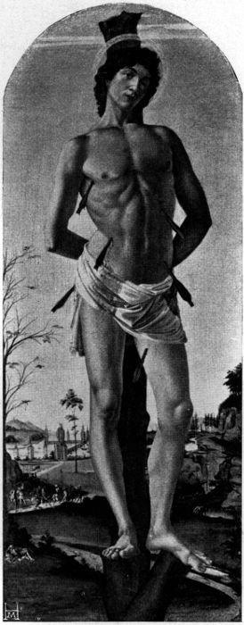
Aufnahme Hanfstaengl.
Berlin, Kgl. Gemäldegalerie.
DER HEILIGE SEBASTIAN
Botticelli starb unvermählt. »Eines Tages,« – erzählt ein Florentiner Schriftsteller des Cinquecento – »drängte ihn Messer Tommaso Soderini zur Heirat; aber Sandro antwortete: »Ich will Euch sagen: vor einigen Nächten träumte mir, ich hätte ein Weib genommen. Darob erfasste mich solcher Schmerz, dass ich aufwachte und, um nicht wieder einzuschlafen und das nämliche noch einmal zu träumen, erhob ich mich und lief, einem Verrückten gleich, die ganze Nacht durch Florenz …««
Diese reizende Anekdote, die alles enthält, was von Botticellis Verhältnis zum Weibe überliefert ist, zeigt nur, wie Sandro, nach Art vieler Grossen, wohlmeinender Zudringlichkeit gegenüber sich hinter trivialem Spott verschanzte. In[15] Wahrheit mochte das Weib eine grössere Rolle in seinem Leben spielen, und was seelische Scham ihm auszusprechen verbot, künden deutlich genug seine Werke, vor allem seine Madonnenbilder. Maria, die heilige Gebenedeite, steht im Mittelpunkte seines Schaffens; aber nicht die unnahbare, in starrer Herrlichkeit thronende regina coeli des Mittelalters, sondern die scheue ancilla Domini, die am tiefsten leiden musste unter allen Frauen dieser Erde und deshalb am besten weiss um alles Menschenweh …
diesen Anfangvers jener Marienhymne, die Dante seinen heiligen Bernhard jubeln lässt, schrieb Botticelli in einem grossen Altargemälde der Florentiner Accademia auf den Sockel von Marias Thron. Er wurde mit der nächsten Zeile
zum Leitmotiv für alle Madonnenbilder Botticellis; Hoheit und Demut, Jungfräulichkeit und Mutterschaft, das geistige Sich-Hingeben an den heiligen Sohn, all dies gestaltete Botticelli zur unlöslichen Einheit. Lebte doch vom Mönch wie vom Troubadour etwas in seiner Seele; einem lyrischen Asketen gleicht Sandro in seinen religiösen[16] Bildern, glaubensernst und doch süssen Wohllautes voll. Der Lyriker wuchs mit den Jahren zum Pathetiker; seine Ausdrucksmittel wurden reicher und gewaltiger; was er vordem in halben Tönen nur geklagt, brauste nun wie Orgelfluten dahin; aber selbst diese letzten Schöpfungen bergen kein andres Ziel als die ersten; die Verse Dantes schimmern, Leitsternen gleich, über allen Wegen, die der Madonnen-Maler Botticelli wandelte …
Die Kunst des Mittelalters kannte nur die ernste Königin, um deren Thron sich die »baroni di Cristo« wie heilige Paladine scharen. Fra Filippo, Sandros Lehrer, brach als erster mit dem strengen Schema des ceremoniösen Andachtsbildes und malte eine junge Florentinerin, die ihr bambino liebkost, indes ein paar lustige Engelsknaben dem traulichen Spiel der beiden zusehen. Botticelli übernahm dies Motiv von seinem Lehrer, aber seiner innersten Natur gemäss vergeistigte er's und wandelte das Familienidyll ins Tragische. Ein frühes Madonnenbild Sandros, das einst dem Principe Chigi gehörte, offenbart den ganzen Wesensunterschied zwischen Botticelli und seinem Meister um so deutlicher,[17] als in der Formgebung des Gemäldes noch eine leise Erinnerung an die Art des Frate durchklingt. Fra Filippos frohgemuter Engel ist zu einem blassen Himmelspagen geworden. Traurig lächelnd tritt er, die Augen halbgeschlossen, mit Ähren und Weintrauben, den Symbolen der Eucharistie, vor die Madonna und ihren göttlichen Sohn. Gedankenverloren ergreift Maria einen Halm, indes Jesus, der auf ihrem Schosse ruht, mit der Kinderhand die Zeichen seines Todesopfers segnet. Da ist jener schwerblütige Botticelli, der niemals lacht, kaum die Lippen zu melancholischem Lächeln verzieht! Seine Madonna und sein Jesusknabe haben immer das Kreuz von Golgatha vor Augen. Darum ist dies Kind so feierlich-ernst und in Mariens Antlitz nur hoffnungslose Resignation zu lesen; darum vermag die Madonna vor innerem Grauen ihr eigen Kind manchmal nicht anzublicken; darum presst sie es wieder in schmerzlichem Krampf an ihren Busen und hält es da mit beiden Armen fest, als wollte sie es gegen einen frevlen Räuber schirmen.
Auch die Engel, die, aus göttlichen Höhen niedersteigend, sich dem »Sohne des Menschen«[18] verehrend nahen, diese morbiden Geschöpfe mit den flackernden Blicken der Fieberkranken wissen um das Schicksal des Welterlösers. Mit Blumen sind ihre Locken durchflochten, aber die blassen Lippen, die frohe Hymnen jubeln möchten, zucken in verhaltenem Weh und man glaubt die dumpfen Klänge eines Sterbeliedes zu vernehmen. Dem Jesuskinde gab Botticelli den kleinen Johannes zum Spielgenossen, einen hysterischen Knaben mit krankhaft funkelnden Augen. Er ahnt ebenfalls die Pfade des Leidens, die Jesus und er selber wandern müssen. Denn zuweilen kniet er vor dem Gottgesandten, und legt, sich ihm angelobend, die Rechte ans Herz, kreuzt, – das orientalische Zeichen willenloser Ergebenheit, – die zarten Kinderarme über der Brust, oder die beiden todgeweihten Knaben umarmen einander wie zum ewigen Abschied …
Wir besitzen viel derartige Gemälde, die meistens für häusliche Andacht bestimmt waren. Aber nur ihre Anlage verrät botticellesken Geist; die Ausführung überliess Sandro, wie üblich beim Werkstatt-Betrieb, den Gehilfen und so können solche Bilder nur als mehr oder minder bedeutendes Schulgut betrachtet werden. Eigenhändige[19] Schöpfungen dieser Art, in denen poetische Conception und feinste technische Ausführung restlos ineinander aufgehen, haben wir leider nur wenige. Als schönstes darf man, ohne Widerspruch befürchten zu müssen, das sogenannte »Magnificat« der Uffizien rühmen. Das Gemälde ist ein Tondo d. h. in jener kreisrunden Form gehalten, die als charakteristisch für Botticelli und seine Schüler gelten kann. Sieht man von Plastikern ab, so war auch hierin Fra Filippo Botticellis Vorgänger. Seine »Madonna mit dem Kinde« im Palazzo Pitti ist wohl das früheste religiöse Tondo der Florentiner Malerei. Aber der Frate sah in der Rundform nur eine zufällige Äusserlichkeit, die auf die Gesamt-Anlage des Gemäldes ohne Einfluss blieb. Sandros Magnificat dagegen ist bereits als Tondo erdacht: die Haltung Mariens und des einen Engels, die Arme von zwei anderen wiederholen leise, doch nachdrücklich die Rundlinie des Rahmens und überall herrscht eine seltsam weiche Formgebung. Dies alles sind ohne Zweifel hohe Vorzüge des Gemäldes; aber auch in dem Magnificat stört die obligate Schwäche botticellesker Tondi, jene unübersichtliche und gedrängte Komposition, die[20] überall, wo es um lebensgrosse Figuren sich handelt, merkbarer als z. B. in dem kleinen Holophernes-Bilde, hervortritt. Vor den grossen Köpfen, die förmlich aneinander kleben, gewahrt man kaum die Körper; man sieht eine geöffnete Bibel, in die Maria den Hymnus an sich selber schreibt; aber niemand könnte angeben, wo sie eigentlich aufruht, und das Tintenfass müsste dem Engel, der es Maria reicht, unfehlbar aus den Händen gleiten. Die Krone über dem Haupte der Madonna liegt auf den ausgestreckten Engelsfingern und diese machen nicht den leisesten Versuch, sie zu erfassen und festzuhalten. So hört man öfter vor dem Bilde bemerken. Ob Botticelli aber – in diesem letzten Fall – nicht vielleicht von dem Rechte Gebrauch machte, das nur den Grössten freisteht und bewusst »verzeichnete«? Dies Gemälde scheint wunderbar frei von aller Erdenschwere. Hätte er nun – wie Fra Filippo in der Marienkrönung der Accademia – die Krone zu einem wägbaren Goldreifen gemacht, dessen Gewicht auf den Fingern lastet, so wäre dies ein Missklang, ein Forte in der Pianissimo-Stimmung des Bildes. Darum hat Sandro die Krone nicht, wie andere Künstler thaten, als[21] eine Metallmasse dargestellt, sondern sie gleichsam entmateralisiert, in einen goldenen Strahlenglanz verwandelt, der, vom heiligen Geiste niederfliessend, sich zu unzählbaren Sternen verdichtet; diese aber bedürfen keiner Stütze, um feierlich hehr über Marias Haupte zu schweben. Bei der gekrönten Magd des Herrn erinnert, im Gegensatz zu den Häuptern der Judith und Fortezza, kein Zug mehr an die rundlichen derbknochigen Gesichter der Pollaiuoli. Ein leicht geneigtes blasses Antlitz von traumhaft weichem Oval; volle feingezogene Lippen, die wie zu leiser Frage sich öffnen; seltsam tiefe Mundwinkel, Augen, die Vergangenes oder Zukünftiges, aber nie eine Gegenwart zu erblicken scheinen; seidige Locken, die erst zu schweren Knoten sich winden, dann sich auflösen und in goldbraunen Wellen, unter einem weissen Schleier hervor, längs der Wangen auf die Schultern rieseln, – all das vereint sich zu jenem Botticelli-Typus, von dessen Schönheit solche Sätze freilich nicht die leiseste Vorstellung vermitteln. Botticellis Bilder lassen sich eben nicht »beschreiben«. Man kann pedantisch analysieren, was in ihnen wirkt, ihr Zauber selbst lässt sich so wenig in Worte umsetzen[22] wie eine Melodie oder ein Accord. Das liegt im Wesen von Botticellis Kunst begründet.
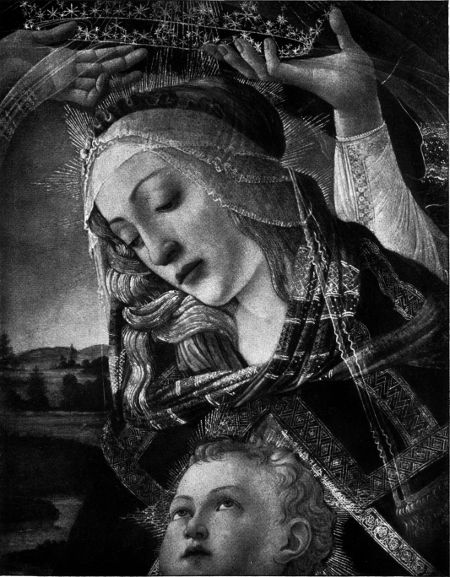
Florenz, Uffizien.
KOPF DER MADONNA (aus dem »Magnificat«)
Bisher hatte die Quattrocento-Malerei ihr Ziel in der Wiedergabe der Sinnenwelt gefunden; sie war, um eine Wendung Leone Battista Albertis zu gebrauchen, ein Abbild der »cose vedute«, der gesehenen und sichtbaren Dinge. Der Kunst Botticellis aber ist nichts gemein mit dieser episch-deskriptiven Art der anderen Florentiner; die Schilderung der Aussenwelt wird nie zum Selbstzweck, sondern ein reiches Gefühlsleben ringt nach bildmässiger Form. Als Ausdrucksmittel diente Botticelli hierzu die Linie. »Unter Umriss« – sagt wiederum Alberti – »wird man in der Malerei die Umfangslinien eines Körpers verstehen« und in der objektiven florentinischen Malerei kommt der Linie auch keine andre Bedeutung zu. Botticellis Umriss jedoch ist mehr als eine blosse Begrenzungslinie. Der botticelleske Kontur führt, wie eine Melodie, sein vom Körperlichen losgelöstes Sonderdasein, nicht als »Umfangslinie eines Körpers«, sondern wie etwas Immaterielles, wie einen Reflektor seelischer Stimmungen empfindet man ihn; Melancholie, Schwermut, die mystischen Schauer[23] religiöser Ekstasen und jede noch so scheue Gefühlsnuance fanden in Botticellis Linie klaren und bestimmten Ausdruck. Die Ausdrucksfähigkeit der Linie suchte Sandro auf alle Weise zu steigern: Schweres und Massiges mied er, stellte am liebsten überschlanke Körper dar, aus denen die Seele gleichsam von innen heraus leuchtet; bevorzugte spinnenwebhaft dünne, weich anliegende Gewänder, die den Körper weder beschweren, noch ihm Bewegungsfreiheit rauben, liebte vor allem Bewegung als solche. Die blosse Freude an der Gebärde, wie sie den Cinquecentisten eigen war, hat Botticelli jedoch nie besessen; die leiseste Geste entspringt ebenso wie jene Convulsionen, die den Körper krümmen und auseinanderbiegen, einer seelischen Notwendigkeit; in allem spiegelt sich jenes ruhelose Innenleben, das vor Botticelli kein Florentiner Künstler ins Bild zu bannen vermochte. Durfte er seinem Temperament nicht folgen, musste er, wie bei grossen Altarbildern, auf das Schildern von Bewegung verzichten, konnte er seinen Gefühlen keinen adäquaten Ausdruck geben, so scheint er leer und langweilig; die Sprache der Convention hatte keine Worte für Sandro Botticelli.
Trotzdem bieten auch die grossen Kirchenbilder Sandros genug des Neuen und Fesselnden. Sein Verständnis für den Stimmungswert kostbarer Ziergeräte und leuchtender Blumen, seine Fähigkeit, den Eindruck des Feierlich-Religiösen, des Visionären und Traumhaft-Fernen zu erzwingen, dies alles will im Einzelnen bewundert sein. Auf die früheste Vergangenheit greift Sandro in seinen Mitteln da zurück und scheint doch wieder manche Meister ferner und fernster Zukunft vorzuahnen. Wir besitzen nur vier umfangreiche Altargemälde von Botticellis eigener Hand, aber jedes kennzeichnet den grossen Meister der Stimmung oder wenigstens den religiösen Maler im strengsten Sinne des Wortes. Eine frühe, durch Überpinselung leider arg entstellte »santa conversazione« der Florentiner Accademia zeigt den jungen Sandro noch ängstlich in den Spuren der Pollaiuoli wandelnd: »cose vedute.« Ganz anders schon wirkt die sogenannte Palmen-Madonna vom Jahre 1485, die aus der Florentiner Kirche St. Spirito ins Berliner Museum gelangte. Maria hat auf einem stufenerhöhten Marmorthron Platz genommen. Ein wenig vor ihr stehen Johannes der Täufer[25] und Johannes der Evangelist. An diesem althergebrachten Kompositions-Schema für »sante conversazioni« durfte Botticelli nichts ändern. Und doch hat das Gemälde kaum etwas gemein mit allen Bildern, die damals in Florenz den nämlichen Stoff behandelten. Jede Farbe scheint zum Duft geworden. Als ob man in einem südlichen Hain atmete. Palmen und Binsen formen hinter der Madonna eine Nische; Myrthen und Cypressenzweige schlingen sich ineinander; auf der Marmorbalustrade stehen vier Körbe voll Rosen; Büschel von Oliven gewahrt man in edelgeformten Vasen; aus ihrer schwarzgrünen Pracht steigen hochgestielte weisse Lilien auf und von all dieser Herrlichkeit wird das nie entweihte Magdthum Marias umblüht. Ein Künder unserer Sehnsucht deucht Botticelli in diesem Gemälde und griff doch auf das gotische Mittelalter nur zurück, dessen sinnlich-übersinnliche Hymnen manche Vergleiche zwischen Maria und den Blumen enthalten. Jener spitzfindigen scholastischen Vorstellung vom »hortus conclusus«, die kein Humanist seines Spottes mehr würdigte, gab Sandro in seinem Bilde künstlerische Form.
Die anderen Florentiner Maler im Quattrocento erstrebten die Illusion des Wirklichen, Sandro die des Unwirklichen. Darum verwandte er, gleich den Meistern des Trecento, häufig Gold als Stimmungselement. Blendender Strahlenglanz fliesst, wo es nur angeht, vom Himmel zur Erde nieder.
In der grossen Marienkrönung der Accademia hat das himmlische Jerusalem seine Pforten aufgetan und in goldener Majestät erblicken wir Maria, der Gottvater die Krone aufs Haupt setzt. Voll seliger Verzücktheit schauert die Schmerzensreiche zusammen; jubelnd schwingen Engel den Reigen um die neue Herrin und werfen ihr Rosen zum freudigen Willkomm. Nie wieder hat Sandro so göttlich leichtes Tanzen gemalt, nie wieder Engel, so frei von Erdenlast. Ergreifend ist der Kontrast zwischen der goldenen Strahlenpracht[27] des Jenseits und dem klippenreichen Strand, auf dem vier Heilige trauernd zurückbleiben. Auch ihre Schwere hat Sandro vielleicht in bewussten Gegensatz zur Grazie der Engel gestellt. Leider wirken diese Gestalten auffallend leer. Musste Sandro der Schilderung des Bewegten entsagen, den Körper gar noch mit priesterlichen Gewändern, der Dalmatica, der Casula und dem Pluviale behängen, so kam wenig mehr dabei heraus als ein »mächtiger« Faltenwurf und ein paar malerische Schönheiten. Ein Haupt, das der Kardinalshut oder die Mitra decken, ist bei Sandro langweilig. Er wusste Menschen darzustellen, die ihres Gottes Antlitz suchen, keine Würdenträger der Kirche.
Man betrachte daraufhin jenes grosse Altargemälde der Accademia, wo sieben Heilige sich um die Madonna scharen. Der purpurdunkle Baldachin, mattgoldene Reliefs und eine feierliche Architektur ergeben als Ganzes eine Farbenwirkung, deren dekorativen Prunk erst die Künstler des Barock wieder erstrebten; der Panzer des Erzengels Michael ist mit einer Freude am rein Malerischen behandelt, die den meisten italienischen Quattrocentisten fremd blieb, und[28] der seltsam kühlen Pracht eines Farbeneffektes, wie ihn der weisse Handschuh des heiligen Ambrosius, der blutrote Edelstein darauf und ein blauer Bucheinband hervorbringen, wird man erst in französischen Bildern des neunzehnten Jahrhunderts begegnen. Die Figur des heiligen Johannes ist die männlichste Gestalt, die Botticelli je geschaffen; kraftvoll und durchlodert von düsterer Asketen-Glut. Und doch lässt dies Gemälde, dessen Raumverhältnisse durch eine dumme Anstückelung überdies verschoben sind, ziemlich kalt; das lediglich Repräsentierende war, besonders in Verbindung mit lebensgrossen Figuren, eben niemals Botticellis Sache. Durfte er das Ceremonienbild in kleinerem Format halten, Feierlich-Starres in Bewegung auflösen, so konnte selbst auf diesem Gebiet, das den Lyriker Sandro fremd anmutete, ein Werk entstehen wie jene Anbetung der Könige in den Uffizien, die, vom rein malerischen und zeichnerischen Standpunkt aus betrachtet, Botticellis höchste Leistung bedeutet.
Die Anbetung der Könige war im Quattrocento ein beliebter Vorwurf der Florentiner Malerei. Hier konnte sie leicht ihre Freude am[29] Porträt bethätigen und hervorragende Bürger ins Gefolge der Könige reihen. So weit aber wie Botticelli hatte sich keiner der früheren vorgewagt; er hat als erster selbst die Gestalten der Könige in Bildnisse gewandelt. Diese Neuerung hängt aufs engste zusammen mit der Entstehungsgeschichte des Gemäldes. Im Jahre 1469 war der Sohn Cosimos de' Medici, der gichtkranke Piero, gestorben, und seine Kinder Giuliano und der prunkende Lorenzo lenkten die Geschicke der Republik Florenz. Die beiden Jünglinge waren hochgesinnt, voll Kraft und Jugend, den Frauen hold; jedem Manne von Verdienst standen die Pforten ihres Palastes offen. Verskünstler und schönheitsfrohe Ästheten, konnten sie trotzdem, wenn es not that, zu eiskalten Realpolitikern werden; das Ansehen des Staates nach aussen hin war bei ihnen wohl aufgehoben. Das niedere Volk liebte die beiden und Lorenzo, der ältere und anscheinend thatkräftigere, wusste diese Neigung zu erhalten. Er fütterte den Pöbel mit Schaustellungen aller Art. Das hielt einerseits vom Nachdenken über den Verlust der politischen Freiheit ab und gab andrerseits den Medici Gelegenheit, ihren Ästhetendrang zu befriedigen,[30] für eine kurze Spanne Zeit diese wahre Welt in ein schöneres Traumland zu verwandeln. Ritten sie auf Piazza Santa Croce, geleitet von den edelsten Jünglingen, in die Turnierschranken ein, um zu Ehren ihrer Damen eine Lanze zu brechen, so entwarf Antonio Pollaiuolo den Schmuck der Rosse, in der blauen Luft flatterten seidene Fahnen, gemalt von Verrocchio oder Botticelli, und die tönenden Stanzen der mediceischen Hausdichter verglichen ihre Grossthaten mit denen Scipios und Alexanders. Der goldene Glanz blendete aber nicht die Augen aller; viele betrachteten das Regiment der Brüder mit scheelen Blicken und gerade die vornehmste Familie nächst den Medici, die Pazzi, verfolgten die Beiden mit unversöhnlichem Hass. Sie gewannen die Unterstützung des Papstes und beschlossen, am Ostermorgen des Jahres 1478, während des feierlichen Hochamtes im Dom, Lorenzo und Giuliano zu ermorden. Aber nur das Blut des unglücklichen Giuliano floss »aus unzähligen Wunden« über den heiligen Boden; Lorenzo flüchtete durch die Thür der Sacristei, rief seine Getreuen zu den Waffen und nahm fürchterliche Rache an den Gegnern. Botticellis[31] Epiphanie, die ein unbedingter Parteigänger der Medici malen liess, bekundet einen Freundesdank für Lorenzos wunderbare Rettung. Die toten Ahnen und die lebenden Gefährten huldigen mit Lorenzo der schirmenden Allmacht. Darum wurde, was vordem nur ein Mittel zur Wirklichkeitsillusion gewesen, bei Botticelli Selbstzweck des Bildes. Nur um seiner neunundzwanzig Porträts willen scheint es überhaupt gemalt. Maria, Joseph und das Kind nehmen zwar – vielleicht im Anschluss an Leonardos Epiphanie vom Jahre 1478 – nicht mehr, wie es bislang Sitte war, eine Ecke, sondern die Mitte des Gemäldes ein; aber Botticelli hat – zum ersten und letzten Male – der heiligen Familie nicht den Hauptaccent geliehen. Man gewahrt sie kaum; denn unwillkürlich haftet der Blick an den Bildnisgruppen des Vordergrundes, deren diskrete und reizvolle Art sich zu bewegen selbst dem in solchen Dingen anspruchsvollen, Cinquecento Respekt abnötigte. Da ist der greise, damals schon längst verstorbene Cosimo de' Medici mit dem prachtvollen Senatorenhaupt; er neigt sich ehrerbietig, aber nicht allzu inbrünstig, den Fuss des Kindleins zu küssen; wie[32] etwa ein mächtiger Vasall seinem jungen Könige huldigt. Hinter dem Vater knieen seine – ebenfalls toten – Söhne, Piero und der nicht minder schöne als lasterhafte Giovanni de' Medici. In der Ecke links vorne steht, seine Hand wie träumend am Schwerte haltend, der prunkende Lorenzo und dem vornehmsten Medici stellte, nicht allzuweit vom ermordeten Giuliano, sich Botticelli selber gegenüber; er kannte seinen Wert und wusste sich richtig einzuschätzen. An diese Hauptpersonen reiht sich zu beiden Seiten statistenartig das Gefolge. Freilich im »Teatro del mondo«, auf der Bühne des Lebens, hatte wohl jeder dieser Männer eine grössere Rolle durchzuführen; es wäre eine lockende Aufgabe, all diese Personen zu identificieren und, von Botticellis Bild ausgehend, die Geschichte der mediceischen Kultur zu schildern.
Nicht nur den Triumph der Sieger, auch die Schmach der Gegner musste Botticelli aller Welt verkünden und nach alt-toscanischer Sitte auf die Mauern des Palazzo del Podestà einige Mitglieder der Pazzi-Familie und ihre Anhänger als Verräter malen, d. h. mit den Füssen nach oben. In der Sammlung Bonnat erinnert eine[33] Zeichnung Leonardos an jenes Schand-Fresko, das Botticelli selber noch – gewiss ohne Schmerz – zerstören sah; heute besitzt Florenz nur mehr eine einzige Probe seiner Art »al muro« zu malen, jenen heiligen Augustin, den er für einen Vespucci in der Ognissanti-Kirche schuf. »Das Werk gelang ihm vorzüglich«, – meint Vasari – »weil das Haupt des Heiligen tiefes Nachdenken und jene höchste Feinheit des Geistes offenbart, wie sie klugen Menschen eigen ist, die sich beständig mit dem Ergründen sehr hoher und schwieriger Probleme befassen.« An der Wand gegenüber sieht man die Einzelgestalt des heiligen Hieronymus, die Domenico Ghirlandajo – ebenfalls für einen Vespucci – dort al fresco malte. Ein Blick auf dieses Werk genügt, um Botticellis Wesen und Vasaris Lob zu begreifen. Ghirlandajos Hieronymus, ist, was das Künstlerische anlangt, ein missglückter Versuch, die Feinmalerei flandrischer Meister mit dem monumentalen Freskostil zu vereinen. Und was hat, hinsichtlich des Geistigen, dieser phlegmatisch dreinschauende alte Herr mit dem einsamen Büsser von Bethlehem gemein; wer traut ihm das Pathos der »Briefe« zu? Der Heilige Botticellis[34] gleicht dagegen aufs Haar dem Bischof von Hippo, wie er in seinen »Bekenntnissen« so prachtvoll lebendig uns entgegentritt, jenem Mann, dessen Seele alle Stürme durchbrausten, der die Leidenschaften kannte und selbst vor seinem Intellekt auf der Hut sein musste. An die satten und zufriedenen Renaissance-Heiligen wird niemand vor dieser in grossen Zügen hingestrichenen Gestalt denken; wie die meisten Heiligen Botticellis, der Johannes Evangelista der Palmenmadonna oder der Eligius der Marienkrönung, geht auch der Agostino im Typus auf die finsteren und wilden Asketen trecentistischer Altarwerke zurück. Denn Botticelli liebte die damals so verachtete gotische Malerei, die er vielleicht als christliche Kunst an sich empfinden mochte. Nannte man ihn doch sogar den »letzten Künstler des Mittelalters«. Gewiss mit Unrecht. Er wollte – in jenen Tagen wenigstens – nur das Ewige der Kunst des Trecento von allem loslösen, was an ihr historisch-bedingt und vergänglich war, oder, wie man heute sagt, den lebendigen Duft der toten Dinge in sein Werk herüber retten. Botticellis Verhältnis zum Mittelalter ist rein ästhetischer Natur geblieben und[35] gleicht jenem, das vierhundert Jahre später Rossetti und Burne Jones zu seiner eignen Kunst fanden.
Botticellis Namen hatte unterdessen, auch jenseits der Florentiner Gemarkung, guten Klang erworben. Seine Vaterstadt wollte Sandro mit dem Freskenschmuck im Audienzsaal des Palazzo della Signoria betrauen; aber dies Werk wurde niemals in Angriff genommen; denn vorher schon rief ihn, als er gerade fünfunddreissig Jahre zählte, der ehrenvollste Auftrag, der an einen Künstler der Christenheit ergehen konnte, nach Rom. Dort hatte der gelehrte und streitbare Franziskaner-Papst Sixtus IV. von Giovanni de' Dolci jene Kapelle erbauen lassen, die seinem Namen die Unsterblichkeit sicherte. Italiens grösste Meister sollten ihr Bestes hier vollbringen; da durfte neben Ghirlandajo, Cosimo Rosselli und Pinturicchio, neben Signorelli und Perugino auch Botticelli nicht fehlen. Die Aufgabe, die seiner harrte, war eben so gross, als schwierig und undankbar. Ausser einigen belanglosen Papstbildnissen musste er drei umfangreiche Fresken malen, deren Themata ihm von bibelkundigen Hoftheologen vorgeschrieben waren. Die Versuchung Christi und die Reinigung des Aussätzigen bildeten[36] den Vorwurf des ersten, Episoden aus der Geschichte Mosis den Inhalt des zweiten Freskos; im dritten wurde die Bestrafung der Rotte Korah dargestellt, und das ganze musste »aktuell« gemacht, d. h. mit zeitgeschichtlichen Anspielungen durchsetzt werden. Sandro sollte den Papst als Krieger, als Bauherrn und Gelehrten feiern und ausserdem die Porträts höfischer Würdenträger an ausgezeichneter Stelle anbringen; – auch ein Grösserer wäre da gescheitert. Botticelli rang dem spröden Stoff ab, was er konnte; mangelte ihm auch die Ruhe des Erzählers, leiden die Fresken an manchen Schwächen der Komposition, – Moses erscheint z. B. in dem zweiten Fresko siebenmal! – so wird das Auge für all dies durch viele Einzelschönheiten reichlich entschädigt. Manche Jünglinge und die Holzträgerin im ersten Fresko zählen zu Sandros best ersonnenen Figuren; der epische Ton des zweiten wird durch Stellen von bezaubernder Lyrik unterbrochen; im dritten endlich schlägt uns der heisse Atem des Dramas entgegen, und Botticellis Moses, der voll jener Majestät, die Gott ihm verliehen, seine Rechte, verdammend wider Korahs Rotte streckt, hat erst Michelangelo[37] überboten. Seinem Wesen blieb Botticelli auch in Rom getreu. Nur er konnte zu den drei Versuchungen Christi den Abschied des Heilands von den Engeln als vierte hinzudichten, und auf dem Fresko, das Moses Thaten schildert, nehmen nicht der Auszug der Kinder Israels oder die Erscheinung des Herrn im flammenden Busch den breitesten Raum ein, sondern in den Mittelpunkt der Handlung stellte Sandro die Scene mit den Töchtern Jethros am Brunnen: »Aber Moses machte sich auf und half ihnen, und tränkte ihre Schafe« … Diese wenigen Sätze der Genesis regten Sandro zu jenem Idyll an, dessen einfältige Hoheit man nur mit dem Worte »biblisch« bezeichnen kann. Wie aus Duft und Sonne scheinen diese goldgelockten Mädchen, gleich Kindern eines Blumenlandes, von seltsam trauriger und fremder Schönheit. Sie müssen frieren unter Menschen. Vor solchen Holdgestalten empfindet man das Ganz-Persönliche von Botticellis Kunst. Hierin war er ahnenlos und keiner der Späteren erreichte ihn. Wie Hamlet von Laërtes sagt: »Seine innere Begabung war so köstlich und selten, dass nur sein Spiegel seinesgleichen ist« …
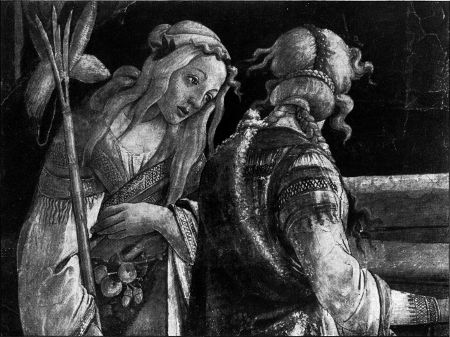
Rom, Sixtinische Kapelle.
TÖCHTER JETHROS
Detail aus dem Fresko der Sixtina
Papst Sixtus würdigte Sandros Werk, indem er – laut Vasari – Botticelli reiche Geldsummen auszahlen liess; aber »dieser lebte, seiner Gewohnheit nach, in den Tag herein, verwirtschaftete alles noch während des römischen Aufenthaltes und kehrte, nachdem er vollbracht, was ihm aufgetragen worden, gleich nach Florenz zurück« … Hier konnte er sich bald wieder als Meister des Freskos erweisen. Diesmal galt es, die Vermählung Lorenzos Tornabuonis mit der schönen Giovanna degli Albizzi zu verherrlichen. Auf dem einen Fresko wird der junge Lorenzo in den Kreis der sieben freien Künste eingeführt: Voll edler Schüchternheit blickt er die weisen Schwestern an, indes ihn die »Dialectica« zur Philosophie, einer betagten [39] Matrone geleitet. In dem andern Fresko begrüssen die vier Kardinaltugenden Giovanna degli Albizzi. Es ist ein ungemein delikater Zug Botticellis: gelassen und prüfenden Auges erwarten die Wissenschaften den Jüngling, der um ihre Gunst erst werben soll. Die Tugenden aber schreiten auf Giovanna zu, als wollten vier Schwestern eine fünfte umarmen, die lange fern geweilt. Heute gibt ein Treppenhaus im Louvre den halbzerstörten Fresken Obdach. Voreinst schmückten sie Chiasso Macerelli, eine Villa der Tornabuoni unweit den Bergen von Fiesole, und hier, unter Cypressen und wilden Rosen, in stiller Sonnen-Einsamkeit muss die erdenferne Poesie dieses Werkes unendlich ergriffen haben.
In strengen geraden Linien fliesst Giovannas rotes Kleid den hochgewachsenen Körper entlang. Orangenfarbige, weisse, gelbe und grüne Gewänder umhüllen die schlanken Mädchen, bei deren Anblick man sich erinnert, dass Alberti in seinem Malerbuch sagt: »Wenn man Diana malen wollte, wie sie den Chor der Nymphen anführt, so thäte man gut, die eine Nymphe in Grün, die andere in Weiss, die dritte in Rosa, die vierte in Gelb zu kleiden und so eine jede[40] in eine andere Farbe.« Leone Battista Alberti, der grosse Theoretiker der Frührenaissance, hatte sein Malerbuch bereits im Jahre 1435 vollendet; aber erst Botticelli, der ganze elf Jahre später zur Welt kam, machte seine Anregungen sich zu nutze. Dass er's überhaupt that, hängt mit seiner Sonderstellung innerhalb der Florentiner Malerei zusammen. Die Nachahmung des Wirklichen, die den andern das Endziel aller Kunst schien, war für Botticelli nur ein Mittel; denn er glaubte mit Alberti: »man müsse darstellen, was dem Geist zu denken giebt; nicht, was die Augen sehen«. Sandro besass den feinsten Sinn für das Wesen der Form, den Gefühlswert der Farbe, mit selbstschöpferischer Phantasie war er begnadet, und all diese Maler-Eigenschaften gingen mit einem sterilen Gelehrtentum eine ebenso fesselnde als komplicierte Verbindung ein. Er war ein »letterato«, hatte den Respekt der Halbgebildeten vor Gedrucktem und Geschriebenem und nur sein Künstler-Genie beschützte ihn davor, der erste academische Maler, Ahnherr einer Professoren-Malerei zu werden. Dass gerade Botticelli zu solcher Geistesrichtung neigte, lässt sich begreifen. Im gastlichen Palazzo Lorenzos de' Medici, wo[41] er als Freund verkehren durfte, begegnete er Dichtern und Gelehrten und diese grossen Herren sprachen so menschlich mit dem gesellschaftlich tiefer stehenden Maler, wiesen ihm Pfade in versunkene Welten, die ihr Zauberwort eben neu belebte, und gaben dadurch seiner Kunst manche Themata.
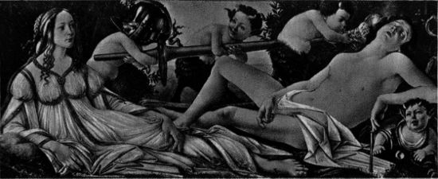
London, National Gallery.
MARS UND VENUS
In den religiösen Bildwerken trägt Botticelli – nennt ihn doch bereits Vasari eine »persona sofistica« – den Talar des mittelalterlichen Scholastikers: er malt den »hortus conclusus« Marias, und in einem andern Gemälde der Berliner Galerie, das seinem Atelier entstammt, erblickt man die sieben Geister Gottes der divina commedia als leuchtertragende Engel. Er entwirft, wiederum in Anlehnung an Dante, eine Himmelsglorie, geht, im nämlichen Bilde, auf Matteo Palmieris gelehrte Wünsche ein und Sixtus IV. hat genau gewusst, warum er gerade Botticelli das Fresko der Reinigung des Aussätzigen zuwies; kein andrer Maler hätte eine theologische Erörterung über die Sühnekraft des Blutes in Kunst umsetzen können. Selbst Äusserlichkeiten und kleine Züge verraten Sandros gelehrte Neigungen. Er meisselt Danteske Verse in Marmorthrone;[42] man erblickt, wo es nur angeht, aufgeschlagene Bücher, Schriftrollen und Tintenfässer; auf dem Berliner Bilde der Palmen-Madonna werden die Olivenzweige in den Vasen nicht von Bindfaden, sondern von lateinischen Spruchbändern zusammengehalten; unmöglich grosse Edelsteine schmücken die Handschuhe und Mitren der Bischöfe, und gewiss möchten, an der Hand eines »liber gemmarum« mittelalterlich-symbolische Beziehungen zwischen der Wesensart der Heiligen und der Natur der Juwelen sich offenbaren.
Sein Gelehrtentum bedingte auch Botticellis eigenartiges Verhältnis zur Antike. Die Maler neben ihm, die Pollaiuoli, Ghirlandajo und seine Schüler füllten ihre Gemälde mit mehr oder minder freien Copien antiker Bauten an. Das war – im allgemeinen – Botticellis Sache nicht. Wohl nimmt auf dem Fresko von dem Untergang der Rotte Korah Constantins Triumphbogen die Mitte der Scene ein; aber die lateinische Inschrift, die seine Vorderfront trägt, »Nemo sibi assumat honorem nisi vocatus a deo tanquam Aron« mildert diesen Anachronismus und verbindet das altrömische Bauwerk mit dem alttestamentarischen[43] Inhalt des Freskos. Ein gedankenloser Kopist antiker Kunst ist Sandro nie gewesen; er dankt ihr entscheidende Anregungen; nur führte ihn – das ist bezeichnend – Leon Battista Albertis Traktat zur alten Kunst. In dieser ästhetischen Bibel Sandros steht zu lesen: »Es gefällt, im Haare der Menschen und Tiere, in den Zweigen, im Laub, in der Gewandung eine gewisse Bewegung zu sehen« und für derartige »Bewegungen« der Haare und besonders der Gewandung, aber auch nur für solche, wurden ihm die Reliefs spät-römischer Sarkophage zum Vorbild. Seine Unabhängigkeit gegenüber der Antike hat Sandro jedoch – bewusst oder unbewusst – stets gewahrt. Dies zeigt sehr deutlich ein weibliches Idealporträt im Staedelschen Institut zu Frankfurt. Vom Individuellen ausgehend, näherte Sandro die Züge des Modells der strengen Regelmässigkeit antiker Gemmenköpfe und gab dem blonden Haar, das erst zu Zöpfen aufgebunden ist, dann lose über die Wangen rieselt, durch Bänder, Reiherfedern und eingeflochtene Perlen jene von Alberti gewünschte »Bewegung«.
Ein besseres Schulbeispiel noch, Botticellis[44] Art zu »erklären«, bietet jene Pallas, die – lange verschollen – heute ein Gemach in den Wohnräumen des Palazzo Pitti schmückt. Auch dies Gemälde verherrlicht die Unterdrückung der Pazzi und bezeichnend für das rein ästhetische Verhältnis der mediceischen Kreise zu Christentum und Antike ist: der nämliche Botticelli feierte die Errettung Lorenzos de' Medici in einem christlichen Votivbilde, der Epiphanie, und durch eine antikisierende Allegorie, eben diese Pallas mit dem Centauren. Voll Symbolik steckt das Gemälde. Der Centaur, dem Pallas mit der Rechten bändigend ins Haar greift, war seit Dantes Zeiten ein Sinnbild der Zwietracht. Die Linke der Göttin hält eine Hellebarde und einen Ölzweig, der sich in einzig schönen Linien um ihr Gewand ranken will; das bedeutet Kraft und Frieden; ihrer Vereinigung entspriesst eine segensreiche Herrschaft: nur die Medici können mit einer solchen die Arnostadt beglücken; darum durchwirken, eine Impresa Lorenzos, drei Ringe, die sich ineinander schlingen, das Kleid der Olympierin. Das klingt pedantisch und schulmeisterhaft; aber Botticelli war ein Künstler, dem alles, was er schuf, selbst eine[45] politische Allegorie, zum inneren Erlebnis wurde; er war ein Maler, und das will sagen: jedem, auch dem kleinsten Flächenstück in seinen Bildern kommt, lange vor seiner symbolischen, eine bestimmte sinnliche Bedeutung zu; alles ist, bevor es Allegorie wurde, als Form und Farbe erdacht gewesen. Darum wird man stets das Pathos des Centauren, den malerischen Reiz der hellen Frauenhand im dunklen Haar des Unholdes bewundern und kann, auch ohne literarische und culturgeschichtliche Vorkenntnisse, von der traurigen Schönheit der Pallas ergriffen sein.
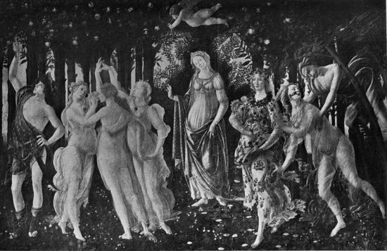
Florenz, Accademia.
DER FRÜHLING
Nicht anders ist es mit der herrlichsten Allegorie Botticellis, dem »Frühling« der Florentiner Accademia. In einem menschenfernen Haine webt der Lenz und tausend farbenbunte Blumen spriessen empor; Grazien in goldgesäumtem Schleiergewand reichen einander die Hände zum Reigen; auf zarten Füssen eilt eine Blütenfee durch all die Frühlingspracht, in der selbst der rastlose Hermes gern verweilt; seiner Mutter zu Häupten gaukelt Amor faltergleich in Lüften und mit sinnendem Lächeln blickt Venus auf ihr ewiges Reich … »ridegli intorno tutta la foresta« … Wer je empfand, wie die Einzelschönheiten der[46] Formen und Farben beim Betrachten sich zur dichterischen Einheit zusammenschlossen, mag bewundert haben, wie hier ein Poet zum Maler, ein Maler zum Poeten geworden; die Frage, was ist hier gemalt, mögen sich nur wenige gestellt haben. Und doch sind darüber Aufsätze und Bücher geschrieben worden, in letzter Zeit sogar erbitterte Fehden entbrannt, und die Pforten zum Reich der Venus sind von hadernden Gelehrten umlagert, die uns durch Citate aus Ovid und Horaz, aus Alberti und Polizian, durch Hinweise auf die Revers-Seite von Medaillen und mailändische Holzschnitte den wahren Sinn eines Gemäldes offenbaren wollen, das sich allen Ungelehrten anscheinend von selbst erklärt. Man streitet ums Ganze wie ums Einzelne, möchte die Entstehung des Bildes mit einem Ereignis der Florentiner Zeitgeschichte in Verbindung setzen, weiss aber nicht, ob mit dem Tode der bella Simonetta Vespucci, der Muse des mediceischen Kreises oder mit der Hochzeit Lorenzo Tornabuonis; dass Botticelli mancherlei Anregungen den prunkenden Stanzen von Angelo Polizianos »Giostra« schuldet, wurde sehr scharfsinnig und überzeugend nachgewiesen; Alberti mag ihm eingegeben[47] haben, die Grazien zu schildern, wie sie »lächelnd, mit ungegürteten und durchsichtigen Gewändern angethan, einander an den Händen halten«; verweist man jedoch, um die Anwesenheit des Hermes im Reiche der Venus zu »rechtfertigen«, auf eine horazische Ode an Venus, wo nichts weiter zu lesen ist, als »Amor und Hermes geleiten dich«, so heisst das, einen grossen Künstler nicht verstehen. Dass Botticelli ins Reich der Venus auch einem göttlichen Jüngling Einlass gewährt, musste er sich dazu erst von einer klassischen »Belegstelle« die Erlaubnis holen, und lässt sich die Wahl dieser vielgedeuteten Figur nicht vom rein künstlerischen Standpunkt aus begreifen? Vielleicht hätten diese Frauengestalten, ohne den Kontrast zu einem männlichen Akte, nicht so eindringlich gewirkt; wie könnte jene Bewegung, die, allmählig leiser werdend, das Bild von rechts nach links durchzieht, edler ausklingen, als in der geraden Linie des jünglinghaften Hermeskörpers, und glaubt man wirklich, dass nebeneinander gestellte Illustrationen zu fünf oder sechs Autoren als Summe eine unvergessliche Stimmungseinheit ergeben?
Dem nämlichen Gefühlskreise wie der »Frühling«,[48] – »Reich der Venus« wäre ein besserer Titel für das Gemälde – der nämlichen mediceischen Antike gehört auch die »Geburt der Venus« in den Uffizien. Zu Vasaris Zeiten schmückten beide Bilder einen Raum und als Gegenstück zum »Frühling« ist dies künstlerisch nicht ganz so hoch stehende Bild zweifellos von Botticelli erdacht worden. Rosenblüten gaukeln durch sonnenvolle Luft und Windgötter hauchen die Schaumgeborene, die aufrecht in einer blanken Muschel steht, über das blaugrüne Meer zum Strand. Eine goldhaarige Nymphe im Blumengewande harrt, die leuchtende Nacktheit der Gebieterin mit dem Königsmantel zu bergen. Die Herrscherin betritt ihr Reich: vergebens sucht Flora, sich der stürmenden Glut des Zephirs zu entwinden, in dumpfer Mädchensehnsucht schlingen die Grazien den Reigen; alle treibenden Säfte und Kräfte des Frühlings werden lebendig, – »vereint sind Liebe und Lenz« … Anregungen von seiten Polizians und Albertis lassen sich auch in diesem zweiten Bilde nachweisen; aber Sandro wahrte doch seine Künstlerfreiheit. So wird, um ein prägnantes Beispiel einzuführen, Venus bei Polizian, gemäss[49] dem Homerischen Hymnus an Aphrodite, von drei Nymphen empfangen; Botticelli malte nur eine und vielleicht braucht man das nicht, wie ein wohlmeinender Kunsthistoriker that, mit »Vergesslichkeit« von seiten Sandros zu entschuldigen. Jenen Glanztagen botticellesken Schaffens entstammt auch das wundersame Idyll von Mars und Venus in der National-Gallery. Wiederum erkennt man leise Anklänge an manche Reime der »Giostra«; aber niemandem werden vor diesem Gemälde Homerische Verse einfallen: die hellenischen Götter lachen, Sandros Olympier verziehen kaum den Mund zu träumendem Lächeln. Um den schlafenden Kriegsgott, – den besten männlichen Akt, den Botticelli je geschaffen, – treiben mit den Waffen des Schlachtenerregers bocksbeinige Satyrknaben ihr tollgraziöses Spiel. Aber das schmerzverzogene Antlitz des Gottes steht in seltsamem Kontrast zu ihrem Thun, und Aphrodite, die von golddurchwirktem Pfühl mit lächelndem Ernst auf den Schlummernden blickt, ist zwar schön, aber nicht, gleich ihrer Homerischen Schwester, »unbändigen Herzens« … Jene antike Sinnlichkeit, die untrennbar ist von gesunder und kraftvoller Schönheit, hat Sandro[50] in seiner Venus nicht geschildert; sie hat auch mit der vampyrhaften »Frau Venus« des Mittelalters nichts gemein. Als Bewunderer der Antike schaut Sandro ehrfürchtig zum Olymp empor; selbst die entthronte Aphrodite bleibt ihm eine hoheitsvolle Göttin. Sie gleicht der nazarenischen Maria, und niemand könnte einen Heiligenschein um ihr Haupt störend empfinden. Die keuscheste nackte Frauengestalt schuf Sandro in seiner Venus; aber der »naive alte Meister« wusste auch um süsse Teufelinnen, um Weiber, die nichts als geschlechtliche Wesen sind. Da ist die »Salome« der Accademia; rostrote Haare, gierige Augen und Lippen, die verruchter Sünde entgegenzittern. Von dieser kleinen und leider nur wenig beachteten Predella führt kein Pfad zur Vergangenheit. Botticellis Salome ist nicht das »Mägdlein« der Bibel, kein Zug gemahnt an die kirchlich strenge Prinzessin Giottos, an Filippo Lippis fröhlich tanzendes Kind; aber man findet von dieser Salome einen Weg in die fernste Zukunft, zur perversen Erotik der Oscar Wilde und Aubrey Beardsley. Auf einer andern Predella naht dem heiligen Eligius die Versuchung; aber metallisch funkelnde Hörner im[51] goldigen Zauberhaar verraten die Herkunft der Dämonin; ihre lachenden Augen und der blutrote Dirnenmund werden den Mann Gottes nicht verführen; denn er weiss: »Mulier est confusio hominis, bestia insanabilis … fetens rosa, tristis paradisus, dulce venenum« …
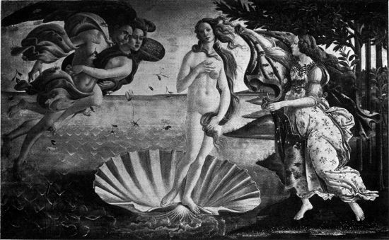
Florenz, Uffizien.
GEBURT DER VENUS
Als Botticelli seine Geburt der Venus malte, dachte er vielleicht, ein im Altertum viel gefeiertes Bild des Apelles gleichsam neu zu schaffen; ganz deutlich offenbart dies Streben nach Rekonstruktion eines verlorenen Kunstwerkes seine »Verläumdung des Apelles« in den Uffizien. Lucian gab in den Dialogen über die Verläumdung eine genaue Beschreibung von dem Bilde des Apelles. Alberti nahm diese Schilderung in sein Malerbuch auf, und aus diesem wird sie Botticelli gekannt haben. Hier, wo es in seiner künstlerischen Absicht liegen musste, folgte Sandro genau den Worten Lucian-Albertis. Man vergleiche: »Es zeigt jenes Bild einen Mann mit sehr grossen Ohren, zu dessen Seiten zwei Frauen standen, deren eine man »Unwissenheit«, die andere »Argwohn« nannte. Dann kam die »Verläumdung«; dies war ein Weib, prächtig von Ansehen, doch zeigte ihr Antlitz allzuviel Verschlagenheit;[52] ihre Rechte hielt eine brennende Fackel; mit der Linken schleppte sie an den Haaren einen Jüngling herbei, der seine Hände zum Himmel emporstreckte. Dann war ein bleicher Mann da, hässlich, schmutzbedeckt, von schaurigem Ansehen … Dieser führte die Verläumdung und man nannte ihn den »Neid«. Zwei andre Frauen versehen die »Verläumdung« mit Schmuck: »List« und »Täuschung« waren ihre Namen. Ihnen folgte die »Reue«, eine Frau im Trauergewande, die sich selbst zerfleischt. Endlich kam ein Mädchen, zag und schüchtern, – die »Wahrheit« …« Nur diese eine Gestalt hat Botticelli – gewiss zum Vorteil des Bildes – geändert. Eine hüllenlose Frau hebt ihre Rechte wie anklagend und beschwörend zu den ewigen Göttern auf. Zum Schauplatz der antiken Scene bestimmte Sandro eine sonnendurchflutete Renaissance-Halle, wo in goldenen Nischen ungemein plastisch empfundene Statuen stehen, deren manche geradezu Motive Castagnos und Donatellos kopieren. Vasari preist dies Gemälde in wenigen aber begeisterten Worten; ob jedoch Leon Battista Alberti seinem Jünger Beifall genickt hätte? »Alle Bewegungen« – konnte man[53] im Malerbuch lesen – »sollen, immer aufs neue weise ich darauf hin, massvoll und lieblich sein« … »Denn heftige Gebärden rauben nicht nur der Malerei jegliche Anmut (grazia e dolcezza), sondern lassen auch den Geist des Künstlers allzu wild und feurig erscheinen.« Und in Sandros Bild ist jede einzelne Figur durchschauert von inneren Stürmen, die sich nach aussen in heftige und leidenschaftliche Gesten umsetzen. Botticelli wusste um diese Vorschrift Albertis und hat sie viele Jahre treulich erfüllt. Aber die Zeiten, da Wünsche von Ästhetikern ihm Gesetze bedeuteten, lagen hinter Sandro. Gerade in jenen Tagen, wo er die Verläumdung malte, vollzog sich die entscheidende Wandlung seiner Seele: der mediceische Sandro, der nur vollendete Kunstwerke schaffen, mit feinen Fingern die Schätze toter Kultur heben wollte, – er starb; und an seiner Statt erblicken wir einen sündbewussten Menschen, der nicht mehr »schöne«, sondern inbrunstvolle Bilder malt, den Pinsel in sein eigenes Herzblut zu tauchen scheint. Der Mann, dem Botticelli diese Erleuchtung seiner Seele, die Neubekehrung zum Christentum dankte, hiess Girolamo Savonarola.
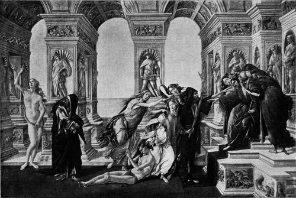
Florenz, Uffizien.
DIE VERLÄUMDUNG DES APELLES
Das Florentiner Volk war – auch in den Tagen der Renaissance – immer fromm gewesen, oder, mit Vespasiano da Bisticci zu reden, »dem Weg der Wahrheit zugethan«; lange vor Savonarola errichtete Fra Bernardino da Massa auf Piazza Santa Croce einen Scheiterhaufen, woselbst »die falschen Haare der Frauen, Spielwerk und eitle Dinge«, verbrannt wurden. Die Medici gehörten religiösen Bruderschaften an und sogar dem frivolen Polizian dienten das Leiden und die Demut Christi gelegentlich zu lateinischen Stilübungen. In Wahrheit hatten jene Freunde Lorenzos de' Medici, die im Palazzo der via larga und in den Hainen von Careggi sich zusammenfanden, nur ein sehr äusserliches Verhältnis zu Gott und seinen Dienern. [55] Der Prediger bedeutete ihnen, was dem antiken Menschen der Rhetor war, dem modernen ein Schauspieler ist. Was er sagte, kam nicht in Betracht; das wie allein entschied. Ob der Mann auf der Kanzel an seine Worte glaubte, danach frug niemand. Angelo Poliziano spricht einmal ungemein charakteristisch vom Eindruck, den ein Sermon Fra Marianos da Genazzano ihm bereitete. »Ich bin ganz Ohr (tutto orecchi) für den Wohlklang der Stimme, die gewählten Worte, die grossen Sentenzen. Ich unterscheide die Absätze, den Bau der Perioden, bin im Bann harmonischer Kadenzen« … Savonarola verschmähte die Mittelchen solcher Kanzelvirtuosen: »Eleganz und aller Wortschmuck« – meinte er einmal – »müssen zurücktreten, wenn man die Lehre des Heils einfach kündet« … Auch Botticelli mag der ersten Predigt Savanarolas beigewohnt haben, um klingende Perioden oder elegante Gesten zu bewundern und fand einen Mönch, – der glaubte. Die Männer um Lorenzo de' Medici »konnten« alles, waren glänzende Artisten der Sprache, geschmackvolle Histrionen von Gefühlen und Empfindungen; ihre Seele aber hatte keinen Teil an dem Thun ihres Geistes. [56] Aus Savonarolas Worten flammte heilige Überzeugung und darum schufen sie Überzeugte; weil er selber glaubte, machte er Gläubige. Dass aber gerade Sandro, der Künstler, so glühend jenem Priester anhing, der alle Kunst nur als Dienerin des Glaubens gelten liess? In jedem Künstler lebt die Heldensehnsucht, am willigsten bewundert er die grosse Persönlichkeit, selbst eine antikünstlerische. So mochte das festumrissene Charakterbild des Priors von San Marco dem Künstler Botticelli Verehrung abzwingen; die Massen-Suggestion, der leicht erregbare Menschen sich selten entziehen, übte ihren Einfluss; und – die Hauptsache – es war plötzlich einsam geworden um Sandro Botticelli. Er hatte Lorenzo de' Medici begraben sehen, und zwei Jahre später – anno 1494 – war Polizian seinem Mäcen gefolgt; bald darauf stürmte der heulende Pöbel den Palazzo Medici und sein Besitzer Piero, Lorenzos Sohn, musste schimpfbeladen aus der Stadt flüchten; aufrecht aber und gewaltig stand der Dominikaner auf der Kanzel, und wenn er dem zitternden Volke das Crucifix entgegenstreckte, knieten Tausende nieder und schluchzten: Miserere Domine … Auch Botticelli [57] hatte viel zu büssen. »Was soll ich über euch, ihr Maler, sagen, die ihr halbnackte Figuren hinstellt«, zürnte Fra Girolamo und Botticelli wusste: »viele Bilder nackter Frauen«, die jetzt »die Häuser der Bürger« verunzierten, waren aus seinem Atelier hervorgegangen. »Kein Kaufmann veranstaltet eine Hochzeit,« – donnerte wiederum Savonarola – »dessen Tochter ihre Ausstattung nicht in eine Truhe legt, die mit heidnischen Fabeln bemalt ist; so dass eine christliche Braut früher den Betrug des Mars und die Listen Vulcans, als die Thaten der heiligen Frauen beider Testamente kennt« … Sandro hatte die buhlerische Liebe von Mars und Venus gefeiert und – als erster – heidnischen Göttern lebensgrosse Bilder geweiht; aber »sollen wir Ovid hier predigen oder christlichen Glauben«? Da verwies Botticelli den frohen Fabelwesen sein Haus, schmückte »die Truhen für die Neuvermählten« mit den Wunderthaten des heiligen Zenobius und dem keuschen Opfertod Virginias oder Lucretias, ging hin und predigte christlichen Glauben, nicht mehr nach Albertis Vorschriften, sondern wie sein glühendes Herz es ihm eingab. Schien er bis nun ein Lyriker, ein [58] Troubadour göttlicher Minne, so wurde er jetzt zum Pathetiker und kleidete sich in die härene Kutte des Busspredigers. Man vergleiche in den Uffizien die beiden Darstellungen der Epiphanie mit einander: die eine, jene Verherrlichung der Medici, malte ein Künstler um der Kunst willen; die andre, leider stark ruinierte, ist das Werk eines Fanatikers, der die sündige Welt zum Glauben bekehren möchte. Wie gepeitscht von unsichtbaren Geisseln, ekstatisch aufgeregt, stürmen von allen Seiten die Völker zu dem Sohne Marias, werfen sich aufs Knie, beugen, brennenden und seligen Auges, sich zum Christkinde vor, deuten mit freudebebendem Arm auf die heilige Gruppe, winken andere herbei in die braune Felsenöde, wo der Menschheit ihr Erlöser geschenkt worden. Hie Fra Mariano – hie Savonarola! Das religiöse Fieber, das mit Botticelli ganz Florenz erfasst hatte, verflog; die politischen Gegner des Priors gewannen die Oberhand, und Botticelli musste erleben, wie am 23. Mai des Jahres 1498 Savonarola, der »zweite Heiland«, seine Lehre mit seinem Tode besiegeln musste. Sandro hat es nie verwunden. In der Chronik seines Bruders Simone Filipepi kann man unterm Allerseelentag [59] des Jahres 1499 lesen: »… Als wir gegen drei Uhr nachts in meinem Hause ums Feuer sassen, erzählte mein Bruder Sandro di Mariano Filipepi, einer der guten Maler, die damals in unsrer Stadt lebten, wie er in seiner Werkstatt mit Doffo Spini über Fra Girolamos Schicksal gesprochen. Und weil Sandro wusste, dass Doffo einer der Eifrigsten bei seinem Verhör gewesen, so bat er um reine Wahrheit, ob Fra Girolamo einer Sünde schuldig befunden worden, die so schmachvollen Tod verdient hatte. Und Doffo antwortete ihm: »Sandro, soll ich dir die Wahrheit sagen? Wir fanden ihn nicht nur keiner Todsünde, sondern nicht einmal einer lässlichen schuldig.« Worauf Sandro sprach: »Warum liesset ihr ihn dann so elendigen Todes sterben?«« …
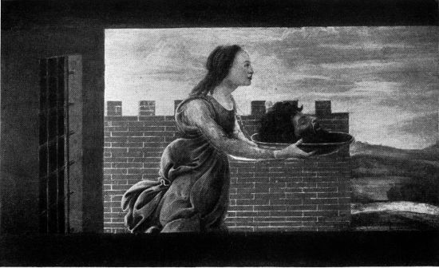
Florenz, Accademia.
SALOME
Wie treu der Jünger Sandro seinem hingeopferten Meister anhing, bekundet auch das einzige signierte und datierte Gemälde Botticellis, jene kleine, unsagbar feierliche Darstellung von Christi Geburt in der National-Gallery, vielleicht das letzte eigenhändige Bild, das Sandro geschaffen. Heftig bewegt und doch von schmerzlichem Frieden, christlichen Geistes und dunkler Symbolik voll, deucht dies Gemälde[60] wie ein Werk aus seiner mediceischen Epoche, übertragen in die Formensprache der Savonarola-Zeit: die Niedrigsten und die Höchsten, Könige und Hirten werden, den Ölzweig des Friedens im Haar, von Engeln zur heiligen Hütte geleitet, auf deren Strohdach andere Engel das »Gloria in excelsis« jubeln. Ihnen zu Häupten schlingen, von goldenem Glanz umleuchtet, wieder andere Engel den Reigen; aber das ist nicht mehr jenes selige Schweben, wie es vordem Sandro in der Marienkrönung mit so einziger Kunst gemalt; eine religiöse Orgie, ein Bacchanal des Glaubens könnte man diesen jäh dahin wirbelnden Tanz nennen. Drei goldene Kronen schimmern im strahlenden Lichtmeer, bestimmt, die Häupter dreier Pilger zu schmücken, die gerade von drei Engeln zärtlich umarmt und geküsst werden, indes ein paar Teufel, Maulwürfen gleich, sich in den Boden verkriechen; – diese drei Pilger sind Savonarola und die beiden Genossen seines Martyriums. Eine griechische Inschrift, deren geheimnisvoller Ton bewusst an die Offenbarung Johannis anklingt, zeugt erschütternd von Sandros Verzweifeln und Hoffen: »Dieses Bild malte ich, Alessandro, am Ende des Jahres 1500, während[61] der Wirren Italiens, in der halben Zeit nach der Zeit, gemäss des elften Kapitels S. Johannis, im zweiten Wehe der Apokalypse, in der dreiundeinhalbjährigen Loslassung des Teufels; dann aber wird dieser gefesselt werden, gemäss des zwölften und wir werden ihn erblicken, zu Boden getreten, wie auf diesem Bilde.«
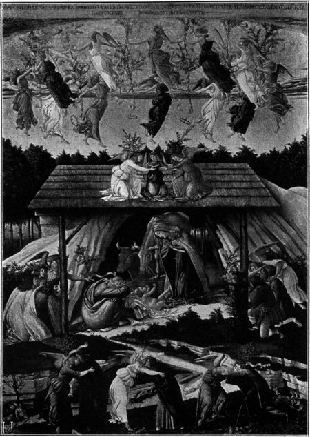
Aufnahme Hanfstaengl.
London, National Gallery.
GEBURT CHRISTI
Weit hinter Sandro lagen nunmehr jene Tage, da er am »Betrug des Mars und den Listen Vulcans« sich erfreute. Der Born antiker Herrlichkeit rauschte ihm nicht mehr; dafür erschloss sich eine christliche Schönheitsquelle dem Gläubigen, – Dantes göttliche Komödie. Sechsundneunzig jener Federzeichnungen, mit denen er für Lorenzo di Pierfrancesco de' Medici ein Exemplar der Divina commedia schmückte, sind uns erhalten; acht davon bewahrt die Vaticana; die übrigen bilden einen stolzen Besitz des Berliner Kupferstich-Kabinets. Vielleicht begann Sandro dies Riesenwerk vor seiner Romfahrt; aber es zog sich viele Jahre hin, wahrscheinlich noch über den Tod des Medici heraus, und das Beste daran gehört den Zeiten, da Botticelli dem Glauben neu gewonnen war. Sandro widmete – mit einer einzigen Ausnahme[62] – jedem Gesang ein Blatt. Aber die Fülle des Darzustellenden erdrückte ihn; das Nacheinander der Schilderung löst sich nicht immer gut zum Nebeneinander auf und so kranken besonders die frühen Zeichnungen zum Inferno an einer unklaren und verworrenen Anordnung. Doch darf man, in Umkehrung eines Goetheschen Wortes, sagen: Wo starker Schatten, ist auch viel Licht. Seine Zeichnungen enthalten, gleichsam im Extrakt, alle Vorzüge seiner Gemälde: die plastische Formgebung, den beseelten Contur, und die Gesten werden hier, noch unmittelbarer als im Bilde, zum Ausdruck eines überquellend reichen Innenlebens. Die finsteren Giganten der Hölle wirken ebenso überzeugend wie die Holdseligkeit der Engelsreigen; wenn Sandro mit ein paar Strichen die Unendlichkeit des Äthers oder eine unermessliche Weite ahnen lässt, so scheint der Florentiner zum Japaner geworden und wie endlich, in den Zeichnungen zum Paradies, Dantes Augen Angst, Verwirrung, das Gefühl der eignen Unwürdigkeit, Hoffnung und heiligste Ergriffenheit wiederspiegeln, – solcher Kunst ist nur wenig, vielleicht gar nichts vergleichbar.
Botticelli konnte den Abend seines Lebens[63] gänzlich den Dante-Studien widmen; denn in seinem Atelier drängten sich die Besteller nicht mehr. Die Florentiner brachten dem Maler, den ein Papst berufen hatte, noch immer Respekt entgegen, baten ihn zuweilen um ein Gutachten in Kunstdingen, – aber Sandros Art schien überholt. Seine Kunst wurzelte nicht im nährendem Erdreich des Florentiner Volkstums; sie glich einer aristokratischen Zierpflanze Careggis, jenes Mediceer-Haines wo die Künstler gelehrt und die Gelehrten Künstler waren. Sandros Schöpfungen bedeuteten die bildgewordene Sehnsucht jener Estheten, die hier, unter Cypressen, zu Füssen eines marmornen Hellenengottes, den ewigen Traum einer versunkenen Schönheitswelt träumten. Als Lorenzo de' Medici starb und seine humanistischen Freunde dem Florenz Savonarolas den Rücken kehrten, verlor Sandro alle Verehrer seiner Kunst. Auch der Geschmack hatte sich gewandelt: einem Geschlecht, das die pompösen, aber seelenarmen Gemälde Fra Bartolommeos bewunderte, konnten Botticellis Werke nichts mehr sagen. Die jungen Künstler schworen auf Michelangelo; und die Banausen, – es wird an solchen auch in der Renaissance nicht gemangelt[64] haben, – was konnte ihnen die scheue Poesie des »Frühlings« oder des »Magnificats« sein? So schleppte Sandro arm und einsam seine letzten Jahre, und als er am 17. Mai des Jahres 1510 in der Kirche Ognissanti begraben wurde, mochten manche staunend erfahren, dass er überhaupt noch gelebt hatte. Man vergass ihn rasch. In der Florentiner Kunst der Hochrenaissance und des Barocks verspüren wir seines Geistes nicht den leisesten Hauch und selbst die feinsten Amateure des Rokoko gingen achtlos an Sandros Werken vorüber. Erst das neunzehnte Jahrhundert entdeckte die Kunst Botticellis und fand in der sehnsüchtigen Schönheit seiner Bilder den Wiederschein der eigenen Träume.
| BERGAMO. | ||||
| 84 | Geschichte der Virginia. | |||
| 85 | Christuskopf. | |||
| BERLIN. | ||||
| 106 | Madonna und Heilige. (1485) | |||
| 1128 | Der heilige Sebastian. (1473) | |||
| Sammlung von Kaufmann. | ||||
| Judith. | ||||
| Königl. Nationalgalerie (Sammlung Raczinsky). | ||||
| Madonna mit Engeln. Tondo. | ||||
| BOSTON (bei Mrs. J. L. Gardner). | ||||
| Tod der Lucretia. | ||||
| Madonna mit Kind und Engel. (Chigi-Madonna.) | ||||
| DRESDEN. | ||||
| 12 | Darstellungen aus dem Leben des heil. Zenobius. | |||
| [66] FLORENZ. | ||||
| Accademia. | ||||
| 46 | Santa Conversazione. | |||
| 73 u. 74 | Krönung Mariae und Predelle. | |||
| 80 | Der Frühling. | |||
| 85 | Madonna, Heilige und Engel. | |||
| 157 | Toter Christus. | } | Diese vier kleinen Bildchen sind auseinandergenommene Teile einer Predelle. | |
| 161 | Salome. | |||
| 158 | Tod des heil. Augustin. | |||
| 162 | Vision des heil. Augustin. | |||
| Uffizien. | ||||
| 39 | Geburt der Venus. | |||
| 1156 | Judith. | |||
| 1158 | Der Leichnam des Holophernes. | |||
| 1179 | Der heilige Augustin. | |||
| 1182 | Die Verläumdung des Apelles. | |||
| 1276b | Das Magnificat. | |||
| 1286 | Anbetung der Könige. | |||
| 1289 | Madonna und Engel. | |||
| 1299 | Fortezza. | |||
| (ohne Nummer) Anbetung der Könige. | ||||
| Palazzo Pitti (Wohnraum). | ||||
| Pallas mit dem Centauren.[67] | ||||
| Kirche Ognissanti. | ||||
| Der heilige Augustin (Fresko). | ||||
| FRANKFURT a. M. | ||||
| Staedel'sches Institut. | ||||
| 11 | Weibliches Idealportrait. | |||
| LONDON. | ||||
| 1033 | Anbetung der Könige. | |||
| 1033 | Geburt Christi. (1500) | |||
| 915 | Mars und Venus. | |||
| Mr. L. Mond | ||||
| Darstellungen aus dem Leben des heiligen Zenobius. | ||||
| MAILAND. | ||||
| Ambrosiana. | ||||
| 145 | Madonna und Engel. | |||
| Poldi-Pezzoli. | ||||
| Madonna mit Kind. | ||||
| PARIS. | ||||
| 1297 | Lorenzo Tornabuoni wird in den Kreis der freien Künste eingeführt. | |||
| 1298 | Giovanna degli Albizzi wird von den vier Cardinaltugenden begrüsst. (Fresken) | |||
| [68] ROM. | ||||
| Sixtinische Kapelle. | ||||
| Die Reinigung des Aussätzigen und Versuchung Christi. | } | 1481–1482. Fresken. |
||
| Die Thaten des Moses. | ||||
| Die Vernichtung der Rotte Korah. | ||||
| Einzelne Figuren von Päpsten. | ||||
| Marchese Pallavicini. | ||||
| Das Weib des Leviten. | ||||
| ST. PETERSBURG. | ||||
| 163 | Anbetung der Könige. | |||
[1] Atelier- und Schulwerke sind in dies Verzeichnis nicht aufgenommen. Wo keine nähere Bezeichnung dabei steht, ist als Aufenthaltsraum des Bildes immer die Hauptgalerie des Ortes anzusehen. Die Zahlen vor dem Bildnamen beziehen sich auf den Katalog der betreffenden Galerie, die Zahlen hinter dem Bilde bezeichnen das Entstehungsjahr, sofern dies gesichert scheint.
| Botticellis Selbstbildnis aus der »Anbetung der Könige«, | Titelbild |
| Seite | |
| Fortezza, | 8 |
| Der heilige Sebastian, | 12 |
| Kopf der Madonna aus dem »Magnificiat« | 20 |
| Töchter Jethros. Detail aus dem Fresco: Die Thaten des Moses, | 36 |
| Mars und Venus, | 40 |
| Frühling, | 44 |
| Geburt der Venus, | 48 |
| Verläumdung des Apelles, | 52 |
| Salome, | 56 |
| Geburt Christi, | 60 |
GEDRUCKT ZU WITTENBERG BEI HERROSÉ & ZIEMSEN
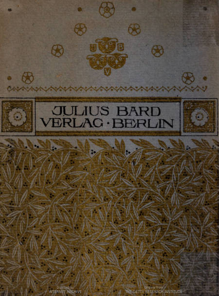
Weitere Anmerkungen zur Transkription
Offensichtliche Fehler wurden stillschweigend korrigiert. Die Darstellung der Ellipsen wurde vereinheitlicht. Die Abbildungen wurden zwischen Absätze verschoben, die Seitenzahlen im Abbildungsverzeichnis aber wie im Original beibehalten.